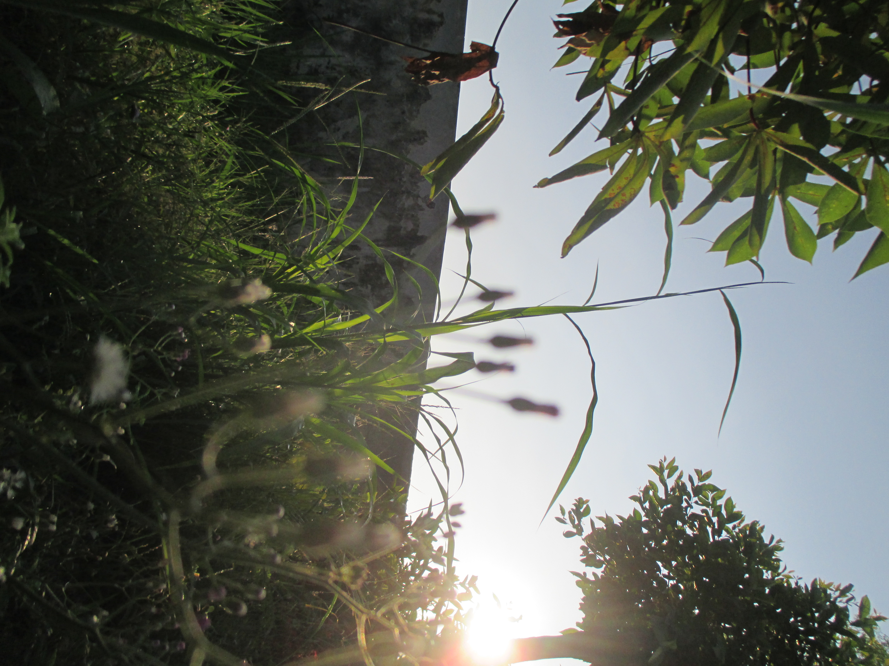
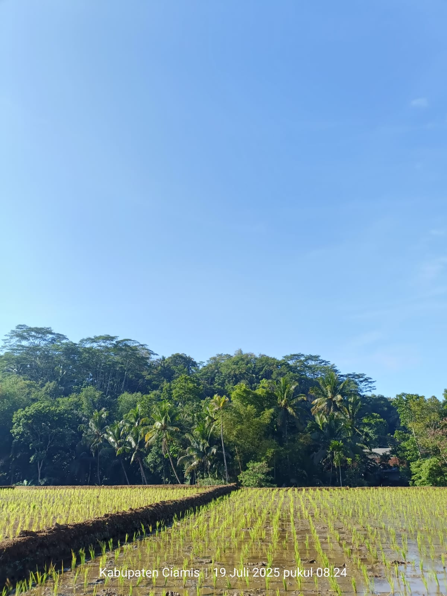
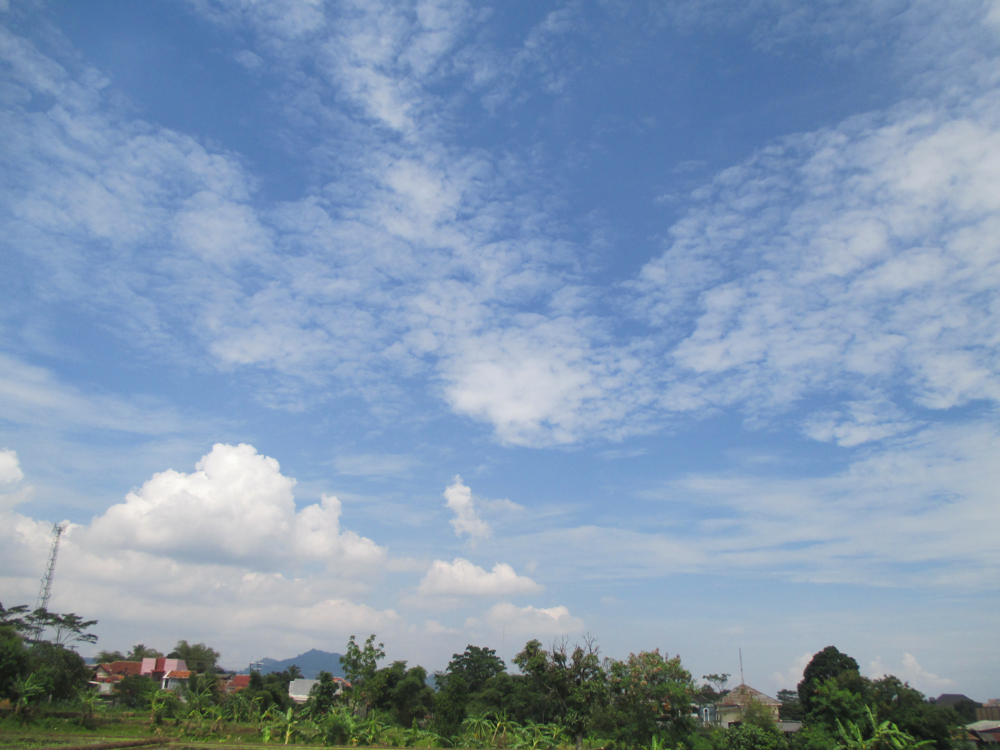
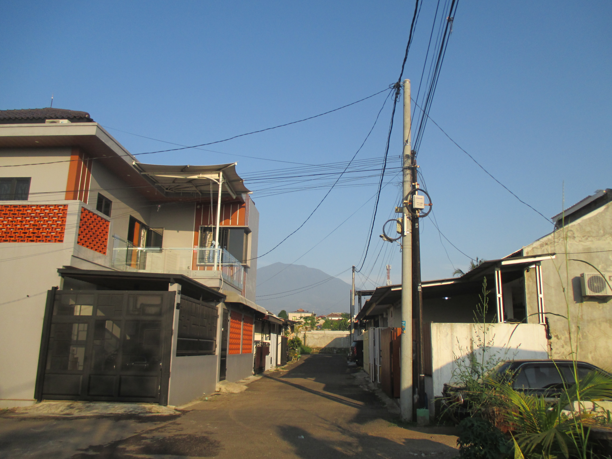

Fotografi merupakan hobi yang baru saya tekuni belakangan ini. Saya mulai
menggunakan kamera Canon IXUS, pemberian dari orang tua saya, sejak kelas 10.
Selain kamera tersebut, saya juga sering memotret menggunakan kamera HP, tergantung apa
yang sedang saya bawa dan momen yang ingin saya abadikan.
Objek yang paling sering saya foto adalah pemandangan dan alam, seperti langit, persawahan,
atau suasana sekitar yang menurut saya punya keindahan tersendiri.
Meski masih baru belajar. saya cukup menikmati proses Fotografi ini,mulai dari mencari momen yang pas,
mengatur sudut pengambilan, hingga melihat hasil akhirnya. Berikut beberapa hasil foto yang sudah saya
ambil sejauh ini:



